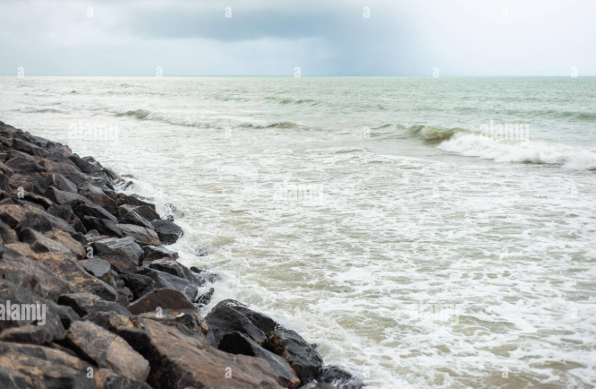

Natural barriers consist of natural elements such as plants, rocks, and elevated land to create barriers that minimize flooding, reduce erosion, and protect ecosystems from storm surge and rising water levels.
Many Natural barriers located directly on the shoreline will use rocks to help break up powerful waves and support elevated land.
Additionally, natural barriers can also be implemented directly in the water to break waves and catch debre before reaching the shore.
These barriers are not only cost effective, but also create habitats for organisms.
Water can carry debre, contaminants, and powerful waves that can disrupt shorelines and inland environments.
Additionally, with powerful storms and global warming sea levels are rising rapidly.
This emphasizes the need for natural barriers to help protect our habitats and ecosystems located in Tampa Bay.